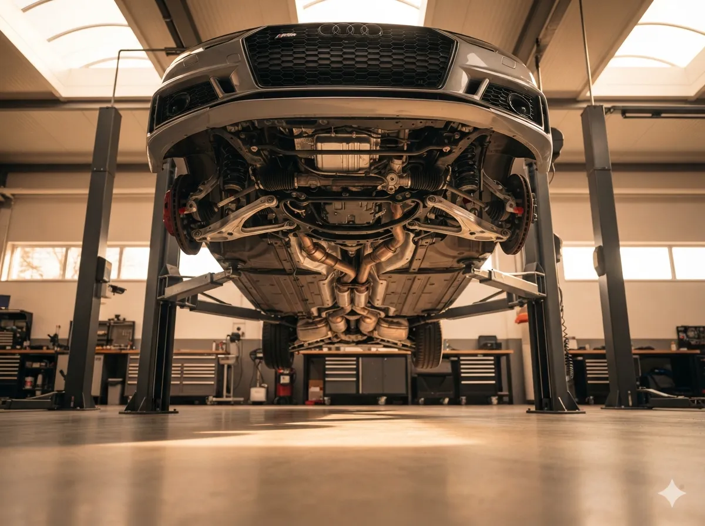

Kreuztaler Werkstatt
0%

Ein intaktes Fahrwerk ist die Grundlage für sicheres Fahren, guten Fahrkomfort und eine präzise Strassenlage. Abgefahrene Stossdämpfer, ausgeschlagene Gummilager oder eine falsche Spur führen nicht nur zu Unbehagen, sondern zu echten Sicherheitsrisiken.
Ein intaktes Fahrwerk ist die Grundlage für sicheres Fahren, guten Fahrkomfort und eine präzise Strassenlage. Abgefahrene Stossdämpfer, ausgeschlagene Gummilager oder eine falsche Spur führen nicht nur zu Unbehagen, sondern zu echten Sicherheitsrisiken.
Stossdämpfer verschleissen schleichend. Nach 60.000–80.000 km ist ein Wechsel ratsam. Anzeichen: Wanken in Kurven, Nachschwingen, verlängerte Bremswege. Wir tauschen Dämpfer und Federn paarweise aus.
Ausgeschlagene Querlenkerlager verursachen Klappergeräusche und unpräzises Lenkverhalten. Wir tauschen komplette Querlenker inklusive Lager oder drücken neue Gummilager ein.
Eine falsche Spur führt zu einseitigem Reifenverschleiss und schlechter Strassenlage. Mit unserer 3D-Vermessung (Hella Gutmann) vermessen wir alle Achsen präzise und justieren sie millimetergenau.
Spiel in der Lenkung, ein schwammiges Lenkgefühl oder Knackgeräusche beim Einlenken deuten auf verschlissene Spurstangen hin. Wir tauschen Spurstangenköpfe und stellen die Lenkung ein.
Warum Sie uns vertrauen sollten.
Wir prüfen Ihr Fahrwerk auf einer Hebebühne: Stossdämpfer, Federn, Querlenker, Gummilager, Spurstangen, Stabilisatoren. Dazu gehört auch ein Stossdämpfer-Test und eine Prüfung der Lenkung.
Verschlissene Teile werden fachgerecht ausgetauscht. Wir verwenden Qualitätsteile namhafter Hersteller (Sachs, Bilstein, TRW, Lemförder) und arbeiten nach Herstellervorgaben.
Nach dem Austausch fahrwerksrelevanter Teile ist eine Achsvermessung Pflicht. Wir vermessen und justieren die Spur, Nachlauf und Sturz – für perfektes Fahrverhalten und gleichmässigen Reifenverschleiss.
Klappert Ihr Fahrwerk, zieht das Fahrzeug zur Seite oder haben Sie das Gefühl, die Strassenlage ist schwammig? Vereinbaren Sie eine Fahrwerksdiagnose.